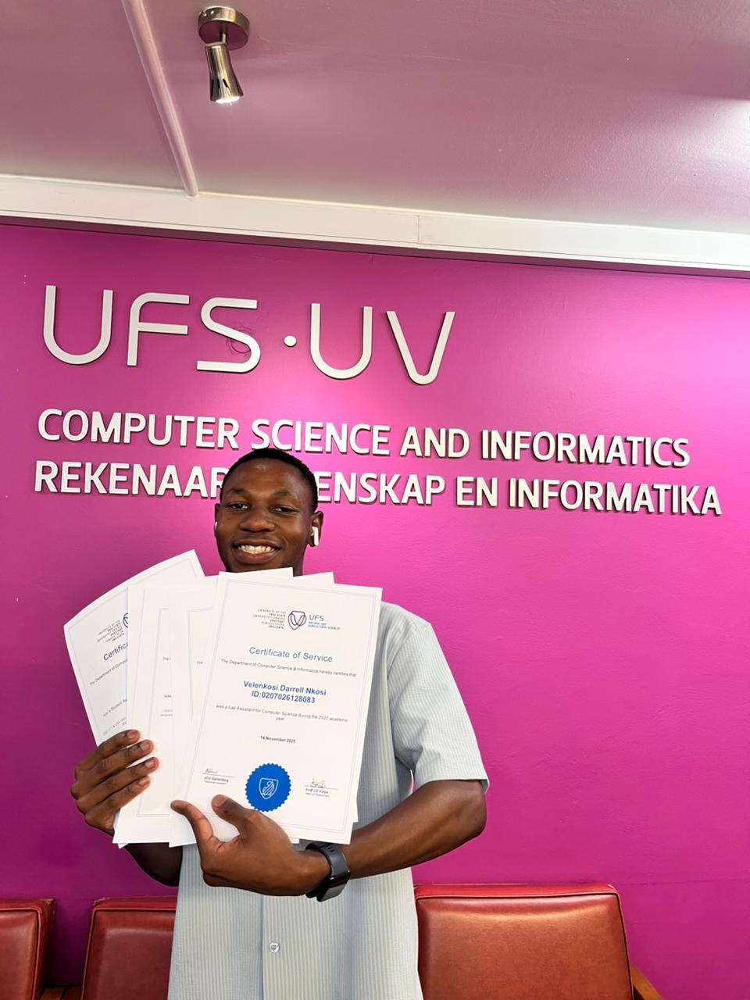

Final-year BCIS Student | Software & Web Developer | UX & Digital Strategy
Final-year Bachelor of Computer and Information Systems student with hands-on experience in software development, web technologies, and UX research. Have a solid IT foundation strengthened by the Cisco Introduction to Cybersecurity certification.
Gained practical experience in UX auditing and digital strategy during an internship at Massmart (Makro). Recognized for academic excellence with Best First- and Second-Year BCIS Student awards and multiple Student Assistant roles in programming, systems design, and infrastructure.
Currently seeking an internship or graduate role in Software Development, UX, or IT Consulting.
Contact MeAssisting students on how to better understand and use Microsoft office tools during computer literacy practicals.
Provided technical support during programming practicals and invigilation of module tests.
Supporting the lecturer and students in mastering key Information Systems and Software Design concepts.
Supporting students in developing key skills in computer systems, networking, and digital technologies.
Provided technical support during programming practicals and module assessments.
Conducted a full end-to-end user experience audit of Makro's e-commerce platforms (mobile app & website) as part of a student consulting team.
Appointed student leader responsible for managing residence corridor operations.
University of the Free State
Central University of Technology
Member
Gained foundational knowledge of cybersecurity concepts, threat intelligence, mitigation strategies, and ethical hacking principles.
Gained foundational skills in dashboard design and data visualization using Microsoft Power BI.
Developed skills in front-end web development using the .NET framework.
Learned to leverage AI tools to enhance productivity in C# development.
Gained expertise in building cross-platform applications using Blazor and .NET MAUI.